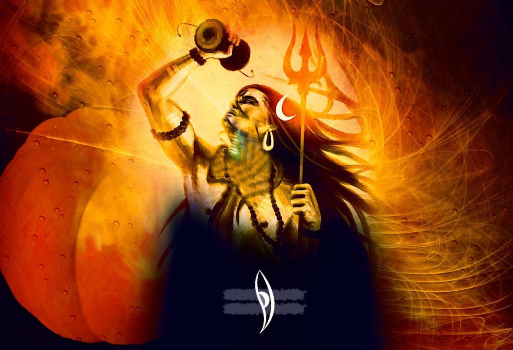
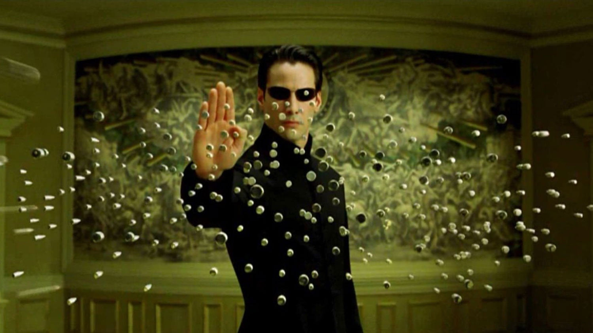
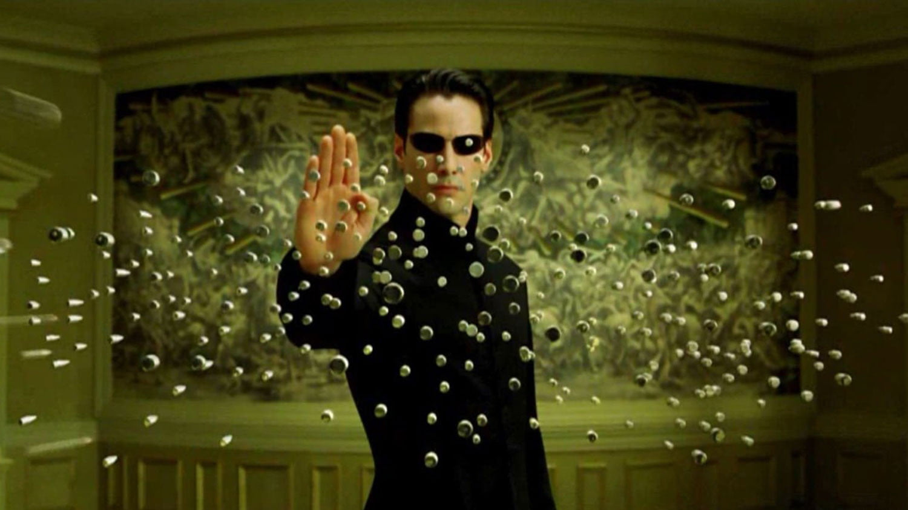

"I am not this body. I am not this mind. I am soul".All the experience are real but has no connection with a person living.
The concept of the 3 dimensions of the world was no longer available. I was transferred to some different dimension altogether. The concept of time-wave duality became clear. Vision got blurred....and the story goes on.
Stage 1-Tandav with Neelkanth
So, I somehow got teleported to Kailash to The blue neelkanth was staying with peace. Mahadev was meditating in peace on a tiger hide when I saw him. I immediately rushed towards him to take his blessing. I was barefooted and the sharp pang on cold ice was killing my feet. I touched his feet to take the blessing, slowly he opened his eyes and said to me..
"Son ...I knew you would come....Now LET'S DANCE. Together"
All the background noise subsided.And the Shiv Tandava commenced:
"जटाटवीगलज्जल प्रवाहपावितस्थले
गलेऽवलम्ब्य लम्बितां भुजंगतुंगमालिकाम्।
The concept of the 3 dimensions of the world was no longer available. I was transferred to some different dimension altogether. The concept of time-wave duality became clear. Vision got blurred....and the story goes on.
Stage 1-Tandav with Neelkanth
So, I somehow got teleported to Kailash to The blue neelkanth was staying with peace. Mahadev was meditating in peace on a tiger hide when I saw him. I immediately rushed towards him to take his blessing. I was barefooted and the sharp pang on cold ice was killing my feet. I touched his feet to take the blessing, slowly he opened his eyes and said to me..
"Son ...I knew you would come....Now LET'S DANCE. Together"
All the background noise subsided.And the Shiv Tandava commenced:
"जटाटवीगलज्जल प्रवाहपावितस्थले
गलेऽवलम्ब्य लम्बितां भुजंगतुंगमालिकाम्।
With background music loud and clear. Shiva started dancing and so did I, matching his steps to steps. Soon enough I got so involved I forget this world and got drowned in dancing. I seriously don't remember how long this tandav continued. After the music stopped and I fell down...
Shiva helped me get up :
Stage 2-How was the josh?
Now the next destination was the Phulwama terror attack site. I could see blood spilling out and mutilated bodies of our jawans.
"आज से तुम मेरे सच्चे भक्त हो!"

Tandav
"Yeh Dil Deewana".Well, that was the song I used to listen on the loop some time ago. But that day was different. Somehow that song started playing and He also started dancing and on the song. I couldn't stop my body either and danced my heart out. Of course in the slow motion. Stage 2-How was the josh?
Now the next destination was the Phulwama terror attack site. I could see blood spilling out and mutilated bodies of our jawans.
 How was the Jaish?
How was the Jaish?
Now I got inside and the movie "URI" with guns and all the uniform and I was on the mission to kill Mohammad Jaish. Soon, I was outside his door. I kicked it open and saw Jaish watching TV and I blurted out the dialogue in style:"Tera time Kathm Jaish" and shot him right on his head.
Stage 3-Knock!!Knock! Neo.
Stage 3-Knock!!Knock! Neo.
Next stop was the movie MATRIX. As I said the everything was in the slow motion. The agent was trying to kill me and I was dodging bullets like a pro.
I could because the bullets was coming very slow.
 The red pill or the blue pill? Stage 4-Am I even alive?.
 The red pill or the blue pill? Stage 4-Am I even alive?.
The different stages were not as discrete as I have mentioned here. Now that everything stopped my body was transported to a different world altogether. Time stopped, Vision blurred and finally nothing much was visible.
"Sab Moh Maya hai" became the ultimate truth and realization.
But one thing that did not stop was my heart. It could have. Rather it started beating super fast.
"Lub-Dub.Lub-Dub......Lub-Dub".I remember the biology class when I was taught how the heart works. I could experience it now. The two parts of heart Auricle and Ventricle. The location of the heart tilted towards the left side. The heart pumping the blood to different parts of my almost dead body.The longest nerve from the heart to my fingertip. I could feel it all. I could exactly tell the size of my heart.
The only organ that didn't let me die was my heart.I am glad that I lived.
Stage 5-Who will remember you?
Stage 5-Who will remember you?
There were flashbacks of the memory. I remember 4-5 person in my life that were closest in my life. I didn't know they were the closest until now, of course. I was wondering how will they react after I die.
I became philosophical asking questions like..What its life? Why is life?
In this stage lots of things unfolded and things became clear that is beyond the scope of the article.
Stage 6- Oh..I am so funny. Why was dead serious my whole life?
Stage 6- Oh..I am so funny. Why was dead serious my whole life?
I was laughing uncontrollably I don't know what was funny. Laughter was not in my control. Some of my favourite songs began playing. And I started dancing, singing and laughing all at the same time.
You never know you are so funny.
Stage 7-Don't remember
Stage 7-Don't remember
I don't remember what happened after that. I entered into the state of dreamless slumber.
Actually, I had drunk concentrated Thandai along with Mahadev's Prashad. I don't know the exact amount. That must be a lot and my stomach was empty. That was the evening I won't forget. It was the day when Saraswati Idol had to be immersed. And it is a tradition to have bhang on that day.I became the victim or rather a blessing . Afterall, I got to meet Mahadev in person. What more can I ask for?
Obviously I have a segmented memory of the night.I did take my creative liberties to join the dots.But the truth must not be very far away.
Anunay Kumar
Har-Har Mahadev
High on Life and High on Trance.
 Jai Sambhu
Jai Sambhu